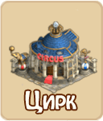

Получено: файл; исходный URL. Первая иллюстрация строки каталога; авторство не подтверждено. Идентичность изображения при замене домена не проверена. Страница: источник.

Цирк
браузерная версия; платформа и дата редакции не установлены- Тип
- Постройка
- Версия и дата
- браузерная версия; платформа и дата редакции не установлены
Данные по источнику · браузерная версия; платформа не установлена · дата редакции списка не установлена
Предварительно: Прочитан список. Имена файлов пиктограмм приводятся как есть: они не гарантируют идентификацию материала. Alt-атрибуты источника содержат ошибки. Отдельная статья и дата не проверены.. Требуется сверка.
- Сведения из списка, включая имена файлов пиктограмм
- [рисунок: cirk.png] 100 000 доступен с 15 уровня Стадии строительства Цирка: 1. 40 [рисунок: Brus_sekvoyi.png] + 100 [рисунок: Kvarc.png] + 150 [рисунок: kraska_belaya.jpg] 2. 50 [рисунок: chernij_mramor.png] + 050 [рисунок: kirpichi.png] + 150 [рисунок: Gvozdi.png] 3. 50 [рисунок: kraska_siniya.jpg] + 050 [рисунок: kraska_rozovaya.jpg] + 100 [рисунок: kanaty.png] В Цирке можно создавать: 1. 1 [рисунок: lestnica.png] = 05 [рисунок: kanaty.png] + 05 [рисунок: prostinya.png] 2. 1 [рисунок: obruch.png] = 10 [рисунок: Provoloka.png] + 02 [рисунок: kinolenta.png] 3. 1 [рисунок: circovoy_shar.png] = 03 [рисунок: Rezina.png] + 03 [рисунок: kompas.png]
Данные по источнику · ВКонтакте, историческая фанатская публикация · 06.08.2013
Предварительно: Фанатский источник; возможное копирование и изменения после публикации не исключены. Неподписанные иконки определены предварительно по именам файлов.. Требуется сверка.
- Стадия 1
- 40 s_woodblocks.png + 100 s_quarc.png + 150 s_paint_white.png. Предположительно брус секвойи, кварц и белая краска.
- Стадия 2
- 50 s_blackm.png + 50 s_brick.png + 150 s_nails.png. Предположительно чёрный мрамор, кирпичи и гвозди.
- Стадия 3
- 50 s_blue.png + 50 s_pink.png + 100 s_rope.png. Первые два ингредиента не подписаны, названия не установлены.
- После третьей стадии
- Лестница: 5 s_bedsheet.png + 5 s_rope.png; Огненный обруч: 2 s_film.png + 10 s_wire.png; Цирковой шар: 3 s_compas.png + 3 s_rubber.png. Названия ингредиентов в статье не подписаны.
Связанные сущности
нет проверенных связей — требуется сверка.